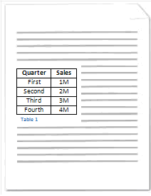
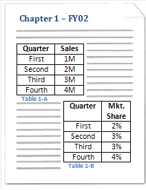

This element specifies the presence of information about captions in a given WordprocessingML document. This information is divided into two components:
• The child element caption defines the format for a single type of caption to be automatically added to the document.
• The child element autoCaptions defines the types of objects to which a caption format shall automatically be applied.
This information should be used to determine the captions which are automatically added to objects when they are inserted into a WordprocessingML document. [Note: This setting is typically ignored unless it is specified in an application's default template. end note]
[Example: Consider the diagram below illustrating a WordprocessingML document containing a table that has been labeled with a caption:

In this diagram, the table contained in the WordprocessingML document has been labeled by inserting a caption below the table consisting of the string Table followed by a decimal number. This automatically inserted caption format is specified using the following WordprocessingML:
<w:captions>
<w:caption w:name="Table" w:pos="below" w:numFmt="decimal" />
</w:captions>
Here, the captions element specifies the presence of one or more caption formats in a given WordprocessingML document with its child element caption. Specifically, the child element caption specifies a single type of caption to be used within the WordprocessingML document. end example]
Captioning leverages fields (§2.16.5) to label objects with reference to either:
• Other captioned objects within a given document
• Other captioned objects within the same chapter in a given document (when chapter numbers are added by specifiying the chapNum attribute on the caption type.
A chapter is a section of text within a WordprocessingML document that is preceded by content with a style that has been specified by to demarcate chapters in documents. Only one style may be specified as the style used for a single caption type to demarcate chapters in a document. A chapter ends immediately above the next instance of content with the style used to demarcate chapters.
[Example: Consider the diagram below:
|
 |
|

This diagram depicts a WordprocessingML document containing two chapters, each containing two tables labeled with captions. The style associated with chapter demarcation has been applied to the strings: Chapter 1 - FY02 and Chapter 2 - FY03 in this document. Specifically, the style used to demarcate chapters is the style with its styleID attribute equal to Heading2 as specified by the heading attribute value of 2 in the WordprocessingML for the caption format:
<w:caption w:name="Table" w:pos="below" w:chapNum="On" w:heading="2" w:numFmt="upperCase" w:sep="8212" />
In other words, the WordprocessingML above may be used to label objects (in this case, tables) inserted in a given WordprocessingML document generated by an application with a caption consisting of: the string Table followed by a decimal number corresponding with the chapter number in which the table is present, a hyphen, and a capital English letter corresponding with the given table's index within the given chapter. end example]
[Note: WordprocessingML is designed such that the caption element may be used in conjunction with applications to provide a dynamic captioning experience. In other words, an application may use the WordprocessingML in the example above to automatically insert a caption consisting of the string Table followed by an incrementing decimal number field below tables when tables are inserted into a WordprocessingML document as defined by the autoCaption element (§2.15.1.7). End note]
|
Parent Elements |
|
settings (§2.15.1.78) |
|
Child Elements |
Subclause |
|
autoCaptions (Automatic Captioning Settings) |
§2.15.1.8 |
|
caption (Single Caption Type Definition) |
§2.15.1.16 |
The following XML Schema fragment defines the contents of this element:
<complexType name="CT_Captions">
<sequence>
<element name="caption" type="CT_Caption" minOccurs="1" maxOccurs="unbounded"/>
<element name="autoCaptions" type="CT_AutoCaptions" minOccurs="0" maxOccurs="1"/>
</sequence>
</complexType>